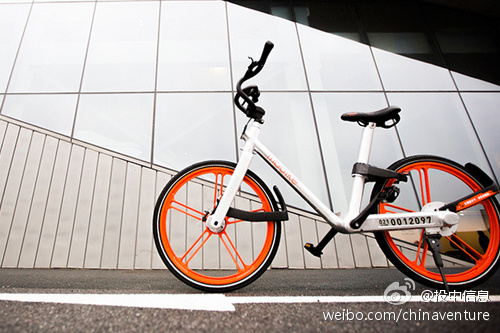

我自己技术出身，以前遇到这类问题，马上开始想的是解决方案，而这其中技术实现又占很大比重。实际上标签库设计中，最核心的是对业务的理解，哪些标签的优先级最高？标签之间是什么样的关系？需要多少个标签才能完成说明一个业务？这些标签的生命周期如何？......

Ada李力
2017-02-10
Ada李力
2017-02-10
王晓峰思路很清晰，一开始就有全球化思维的中国企业不多。看好摩拜。
@投中网:
【专访摩拜单车CEO王晓峰：共享单车和打车软件有本质不同 决定结局的关键有两个】在亚布力，围绕共享单车的火热，围绕短期预期、长期规划，围绕国际化时机和条件，围绕自行车行业的革命，以及业态竞争和打车之争的同与不同，王晓峰都谈到了摩拜方面的经验和思考： 专访摩拜单车CEO王晓峰：共享单车和打车软件有本质不同 决定结局的关键有两个
专访摩拜单车CEO王晓峰：共享单车和打车软件有本质不同 决定结局的关键有两个
- 